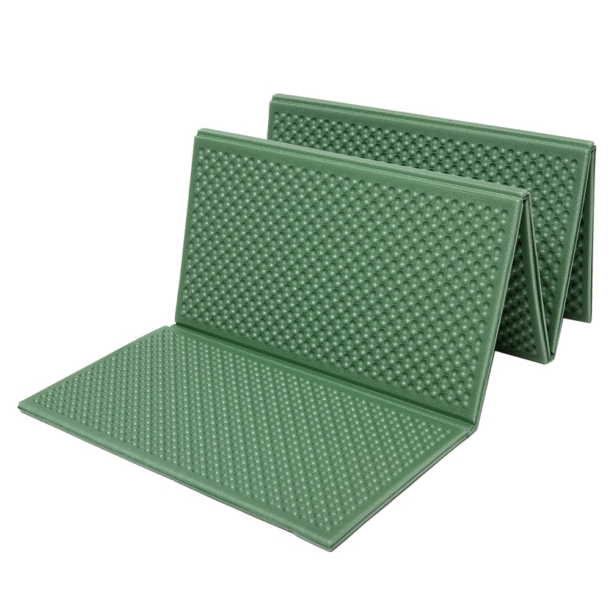
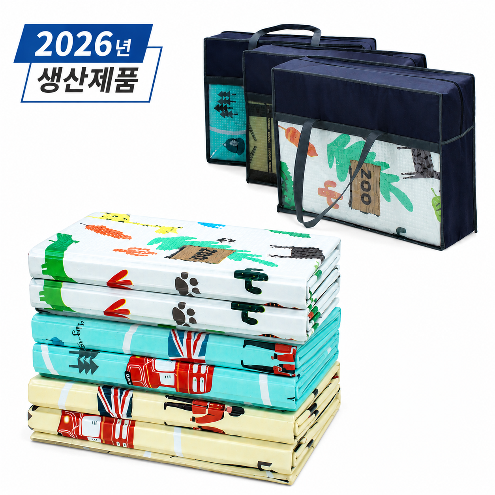
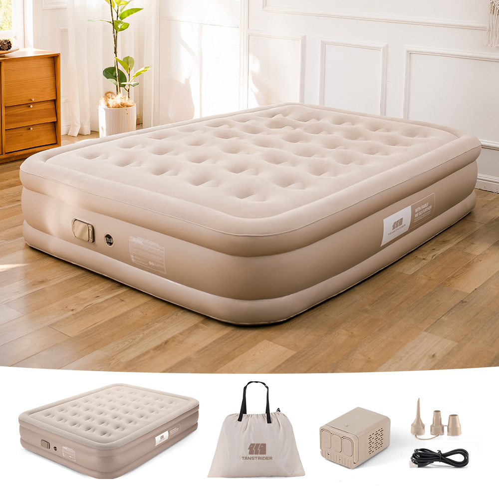

홈 › 제품리뷰 › 캠핑/레저
캠핑 매트, 폼 돗자리냐 자충 에어매트냐
작성: 생활서식 모음 · 2026-07-21
파트너스 활동의 일환으로 일정액의 수수료를 지급받습니다
🛒 오늘의 쿠팡 특가 보러가기 →
캠핑 매트, 종류가 많아 뭘 살지 막막하죠?
핵심은 "두께(쿠션)와 수납, 바닥 냉기 차단" 3대 를
"피크닉 깔개" "돗자리 겸용" "차박 푹신하게"용도별 정답 까지 담았으니
📋 목차
캠핑 매트, 폼 돗자리냐 자충 에어매트냐 — 결론 먼저 스펙 비교표: 한눈에 보기 캠핑 매트 고를 때 봐야 할 4가지 깔개냐 취침이냐, 뭘 사야 할까? 자주 묻는 질문 (FAQ) 결론: 한 줄 요약
캠핑 매트, 폼 돗자리냐 자충 에어매트냐 — 결론 먼저
캠핑 매트는 "두께(쿠션)와 용도" 로 갈려요.자충 에어매트 가 무난합니다. 피크닉·깔개용이면 폼 매트로 충분하고, 두툼한 돗자리처럼 넓게 깔 거면 두꺼운 돗자리매트입니다.
1 피크닉·깔개 (가성비 초이스)
가성비

1만원대 폼 매트
1. 코멧 2단 엠보싱 캠핑매트
1만원대 폼 매트 2단 접이+보관가방 피크닉·깔개용으로 딱
푹신하진 않아도
추천 대상
피크닉·나들이 깔개용으로 쓰는 분 저렴하게 캠핑 매트를 시작할 분 가벼운 바닥 쿠션이 필요한 분 장점
1만원대로 부담 없이 폼 매트를 마련 2단 접이+보관가방이라 휴대·보관이 편함 엠보싱 폼이라 바닥 냉기·습기 차단에 기본 도움 단점
두께가 얇아 차박·장시간 취침엔 배길 수 있음 이 제품은 피크닉·깔개용 입니다. 넓게 돗자리처럼이면 2번, 차박·취침 푹신함이면 3번 자충 에어매트로 가세요. "깔개·피크닉"이면 가성비 최고예요.
한줄 리뷰
"피크닉·나들이 깔개"면 1만원대 폼 매트로 충분합니다. 접어서 들고 다니기 좋아요. 차박·취침이면 두께가 아쉬우니 2·3번을 보세요.
주요 스펙
제품: 코멧 2단 엠보싱 캠핑매트 (202×140, 보관가방) 방식: 폼(엠보싱) · 2단 접이 용도: 피크닉·깔개 배송: 로켓배송 가격: 약 10,890원 (변동 가능) ※ 실제 스펙·가격과 차이가 있을 수 있습니다
2 넓게·돗자리 (베스트 초이스)
베스트

두꺼운 돗자리매트
2. 캠피오 두꺼운 캠핑매트 (돗자리)
두툼한 돗자리매트 특수코팅 방수·먼지 넓게 깔고 앉기
두툼하고 넓어 앉기 좋은
추천 대상
가족·여럿이 넓게 깔고 앉는 분 방수·먼지 관리가 되는 돗자리를 원하는 분 피크닉·캠핑 거실 공간이 필요한 분 장점
두툼해 폼 매트보다 앉을 때 배김·냉기가 덜함 특수코팅이라 방수·먼지 청소가 편함 넓은 크기로 여럿이 앉거나 짐을 놓기 좋음 단점
취침용 자충 에어매트만큼 푹신하진 않고 부피가 있음 피크닉·깔개면 1번, 차박·취침 푹신함이면 3번입니다. 2번은 "두툼한 돗자리+방수" 의 실속 구간 — 넓게 깔고 앉기에 무난합니다.
한줄 리뷰
"가족이 넓게 깔고 앉는" 돗자리 겸용이면 두툼한 매트가 좋습니다. 방수·청소도 편해요. 차박·취침 푹신함이면 3번을 보세요.
주요 스펙
제품: 캠피오 두꺼운 캠핑매트 (돗자리, 200×240) 방식: 두꺼운 폼 · 특수코팅(방수) 용도: 넓게·돗자리 겸용 배송: 일반배송 가격: 약 28,500원 (변동 가능) ※ 실제 스펙·가격과 차이가 있을 수 있습니다
3 차박·취침 (프리미엄)
프리미엄

자충 에어매트(40cm)
3. TANSTRIDER 자충 에어매트
자동펌프 내장 자충 높이 40cm 푹신 차박·취침 푹신하게
펌프 내장으로 알아서 부풀고
추천 대상
차박·캠핑에서 푹신하게 자려는 분 바닥 배김·냉기 없이 취침하려는 분 자동펌프로 편하게 설치하려는 분 장점
자동펌프 내장이라 알아서 부풀어 설치가 편함 높이 40cm로 바닥 배김·냉기 없이 푹신하게 취침 차박·캠핑 취침 품질을 크게 높임 단점
피크닉·깔개면 1번, 넓은 돗자리면 2번이 합리적입니다. 3번은 차박·취침을 푹신하게 하려는 분에게 값어치가 있습니다.
한줄 리뷰
"차박에서 바닥이 배겨 잠을 설친다"는 분에게 자충 에어매트가 답입니다. 자동펌프라 설치도 편하고 푹신해요. 깔개·피크닉이면 1·2번이 합리적입니다.
주요 스펙
제품: TANSTRIDER 자충 에어매트(자동펌프 내장) 방식: 자충 · 높이 40cm 용도: 차박·취침 배송: 로켓배송 가격: 약 75,500원 (변동 가능) ※ 실제 스펙·가격과 차이가 있을 수 있습니다
스펙 비교표: 한눈에 보기
가격·풍량·무게 중 본인에게 중요한 기준부터 보세요. "최고" 표시는 3제품 중 객관적 1위 값입니다.
← 좌우로 스크롤 →
캠핑 매트 고를 때 봐야 할 4가지
두께·용도만 맞춰도 "배김·냉기·부피" 실패를 막습니다.
1) 용도 — 깔개냐 취침이냐 (가장 먼저)
피크닉·깔개: 얇은 폼 매트로 충분넓게 앉기·돗자리: 두툼한 돗자리매트차박·취침: 자충 에어매트로 푹신하게2) 두께(쿠션) — 배김·냉기
얇으면 바닥이 배기고 냉기가 올라옴 취침용은 두께가 있어야 편함(자충 에어매트 등) 바닥 냉기 차단(단열)도 두께와 관련 3) 수납·무게 — 이동 방식
백패킹: 가볍고 작게 접히는 폼·경량 자충차박·오토캠핑: 부피보다 쿠션·취침감 우선보관 가방·접이 방식이 편한지 확인 4) 방수·청소 — 위생
방수·특수코팅이면 물·먼지 청소가 편함 자충 매트는 펑크 대비 수리 패치 유무 확인 겉감이 닦기 쉬운 재질이면 관리가 편리 깔개냐 취침이냐, 뭘 사야 할까?
용도와 이동 방식만 정하면 답이 나옵니다.
피크닉·깔개: 1번 코멧 폼 매트 → 1만원대넓게·돗자리: 2번 캠피오 두꺼운 매트 → 방수차박·취침: 3번 TANSTRIDER 자충 에어매트 → 푹신자주 묻는 질문 (FAQ)
Q1. 캠핑 매트, 두꺼울수록 좋은가요? 용도에 따라 다릅니다. 취침용이라면 두꺼워야 바닥 배김과 냉기가 덜해 편하게 잘 수 있습니다. 특히 자충 에어매트처럼 두께가 있는 제품이 취침 품질이 좋습니다. 하지만 피크닉 깔개용으로는 얇은 폼 매트로 충분하고, 두꺼우면 부피만 커집니다. 차박·취침이면 두께 우선, 깔개·피크닉이면 휴대성 우선으로 고르세요.
Q2. 자충 매트가 뭔가요? 에어매트랑 다른가요? 자충(自充) 매트는 밸브를 열면 스스로 공기가 차오르는 매트입니다. 일반 에어매트는 펌프로 공기를 넣어야 하지만, 자충 매트는 내부 폼이 복원되며 어느 정도 자동으로 부풀고, 자동펌프가 내장된 제품은 버튼만 누르면 부풀어 설치가 매우 편합니다. 차박·취침용으로 인기가 많으며, 두께가 있어 바닥 배김·냉기를 잘 막아줍니다.
Q3. 바닥에서 냉기가 올라오는데 매트로 막아지나요? 두께가 있는 매트는 바닥 냉기 차단(단열)에 도움이 됩니다. 캠핑에서 추위의 상당 부분은 바닥으로부터 올라오는 냉기인데, 두꺼운 매트나 자충 에어매트가 몸과 차가운 바닥 사이를 띄우고 단열해 한결 따뜻합니다. 얇은 폼 매트는 냉기 차단이 제한적이므로, 쌀쌀한 계절 취침이면 두께가 있는 매트나 매트를 겹쳐 쓰는 것이 좋습니다.
Q4. 자충 에어매트는 펑크 나면 못 쓰나요? 수리 패치로 보수할 수 있는 경우가 많습니다. 대부분의 자충·에어매트는 펑크에 대비한 수리 패치를 동봉하거나 별도로 구입할 수 있어, 구멍이 나도 때워서 계속 쓸 수 있습니다. 다만 날카로운 것 위에 직접 깔지 않고 바닥 시트를 함께 쓰면 펑크를 예방할 수 있습니다. 구매 시 수리 패치 포함 여부와 밸브 품질을 확인하면 오래 쓰기 좋습니다.
Q5. 백패킹용이면 어떤 매트가 좋나요? 가볍고 작게 접히는 매트가 유리합니다. 배낭에 메고 걸어야 하므로 무게와 수납 부피가 중요합니다. 경량 폼 매트나 부피가 작게 말리는 경량 자충 매트가 백패킹에 적합합니다. 반대로 차로 이동하는 오토캠핑·차박이면 무게 부담이 적으니 두껍고 푹신한 자충 에어매트로 취침 품질을 챙기는 게 낫습니다.
결론: 한 줄 요약
1) 코멧 폼 매트 — 약 10,890원 / 피크닉·깔개. 1만원대, 접이+보관가방.2) 캠피오 두꺼운 매트 — 약 28,500원 / 넓게·돗자리. 두툼+방수코팅.3) TANSTRIDER 자충 에어매트 — 약 75,500원 / 차박·취침. 자동펌프+40cm 푹신.이 포스팅은 쿠팡 파트너스 활동의 일환으로, 이에 따른 일정액의 수수료를 제공받습니다.